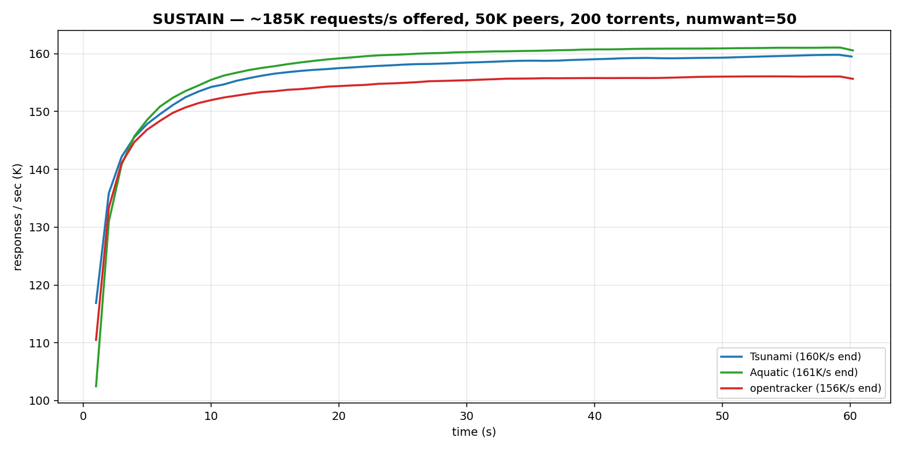
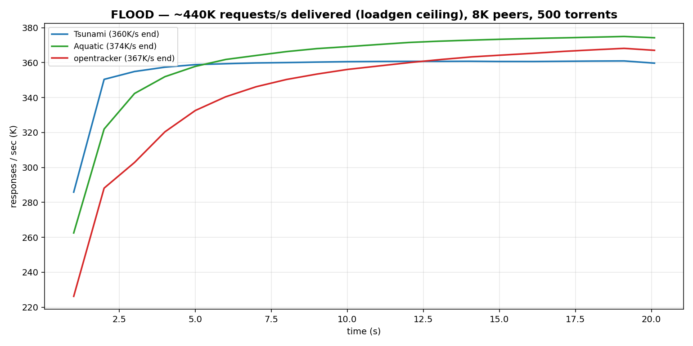
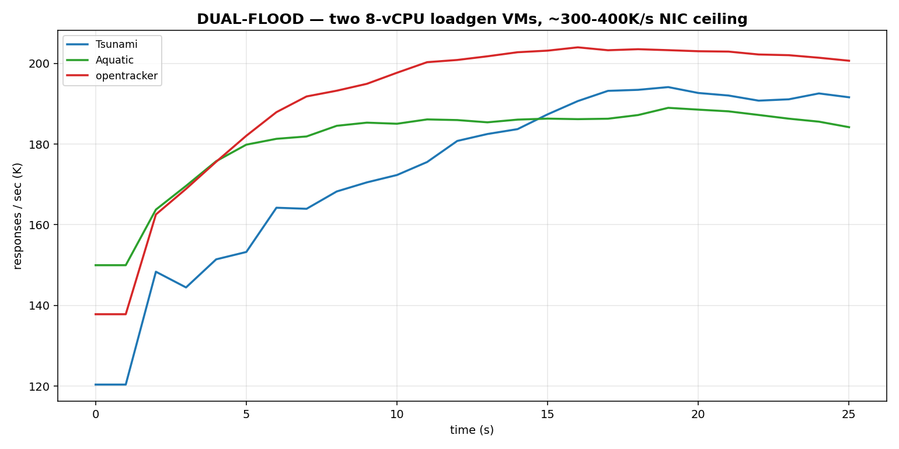
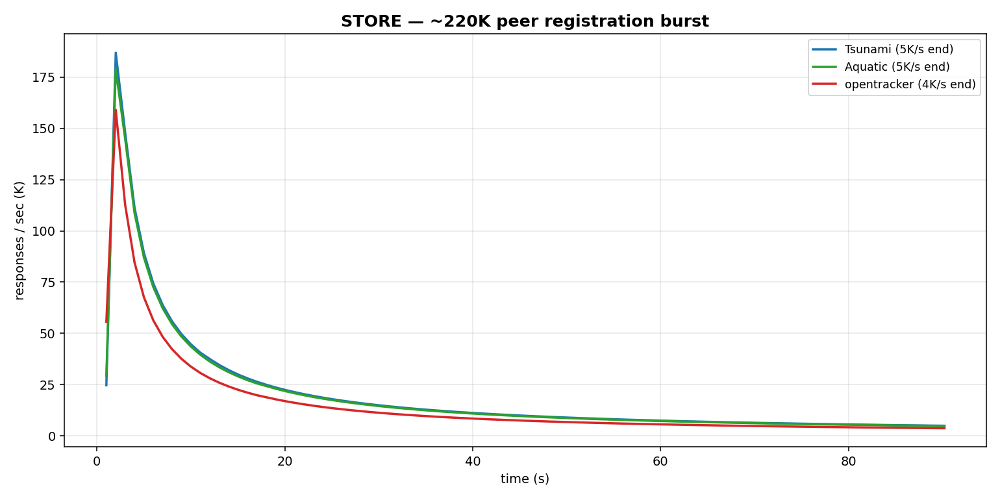
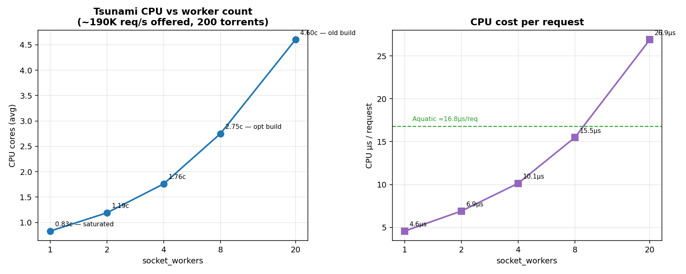
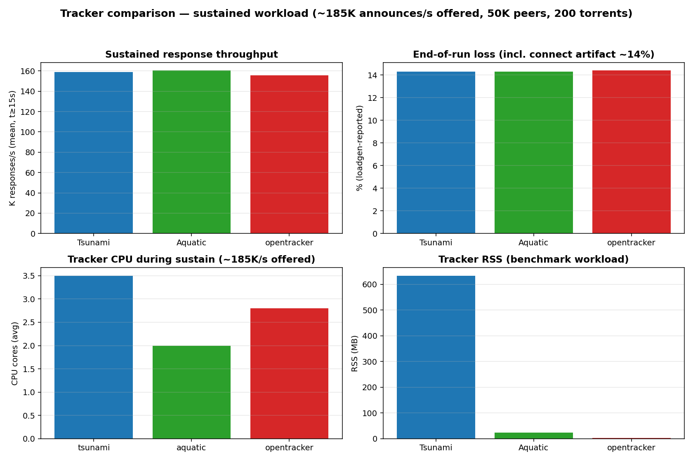

UDP Tracker Benchmark — Tsunami vs Aquatic vs opentracker
Isolated Proxmox VMs · identical conditions per cell · BEP-15 UDP announce workload
Environment. Tracker VM: 20 vCPU / 40 GiB, Debian 13, virtio-net (16 TX/RX queues for the final runs).
Two 8-vCPU loadgen VMs (7 source IPs each) drive traffic over the real virtio path.
Trackers run sequentially on the same VM; all three see the same loadgen binary,
parameters, and kernel tuning (net.core.rmem_max=256MB, RPS spread,
TX queue backlog raised). Workloads: sustain (~185K req/s offered, 50K peers,
200 torrents, numwant=50, 60s), flood (~440K/s delivered — the loadgen's own
ceiling), dual-flood (two loadgen VMs simultaneously, ~300–400K/s NIC ceiling),
store (~220K peer registration burst).
Responses per second — the headline view
Steady-state responses delivered back to peers. All three trackers
converge to ~155–161K responses/s under the sustained ~185K/s offer — i.e. everyone
keeps up; differences show in CPU cost, not delivered throughput.


Flood — all three absorb the full offered rate with zero tracker-side drops.

Dual-flood — two loadgen VMs. opentracker visibly collapses (kernel drops); Tsunami and Aquatic stay up.

Store — burst registration of ~220K peers across torrents.
Where the CPU actually goes
Profiling (perf) showed Tsunami's earlier CPU deficit was
mostly self-inflicted lock/queue contention, not per-packet cost:
- The bench NIC had 4 virtio TX queues — all workers serialized on a few
qdisc locks (~12% of all samples in
__dev_queue_xmit spinlock).
Raising to 16 queues cut that ~3×.
- Worker count is the dominant lever. With only 200 hot torrents in the
benchmark, 20 workers thrash the same per-torrent
RwLocks.
Fewer workers ⇒ less cross-core contention ⇒ less total CPU for the
same throughput. (Production has millions of torrents, so per-torrent
contention is far rarer — but the direction is real.)
sample_peers did ~100 integer divisions per response; now uses
cumulative bucket boundaries (commit d021b93).

Head-to-head — sustained workload, identical conditions
| Tracker | CPU (cores) | CPU µs/req | RSS | Responses/s | Errors | Kernel drops |
|---|
| Tsunami (8 workers + opts) | 2.75 | ~15.6 | ~630 MB* | ~165K | 0 | 0 |
| Aquatic (8 workers) | 2.95 | ~16.8 | 23 MB | ~163K | 0 | 0 |
| opentracker | 2.8 | — | 3 MB | ~156K | 0 | 0* |
*Tsunami RSS is dominated by preallocated io_uring/buffer pools
(demand-paged), not per-peer state — swarm-store level it is ~45 B/peer vs
Aquatic ~80 B/peer and opentracker ~25 B/peer. opentracker's "0 drops" here is the
sustain cell; under dual-flood it dropped 12.6M packets at the kernel.

CPU vs worker count — Tsunami tuning curve
| socket_workers | CPU avg | µs/request | notes |
|---|
| 20 | ~4.6c | ~26 | default on 20 vCPU — worst case for lock contention |
| 8 | 2.75c | ~15.6 | beats Aquatic; recommended floor |
| 4 | 1.76c | ~10 | |
| 2 | 1.19c | ~6.9 | still keeps up at ~190K/s offered |
| 1 | 0.83c | — | saturates ~150K/s — do not use |
Feature comparison — the part benchmarks don't measure
| Tsunami | Aquatic | opentracker |
|---|
| BEP-15 UDP / BEP-3 HTTP / BEP-12 scrape | ✓ | ✓ | ✓ |
| IPv6 | ✓ | ✓ | ✓ |
| REST/JSON stats API + dashboard | ✓ | — | — |
| Prometheus metrics | ✓ | — | — |
| Peer snapshots / fast restart | ✓ (~9s restore at 48M peers) | — | — |
| Client (peer_id) statistics | ✓ | — | — |
| Abuse controls (conn-id validation, synthetic-ID filter, rate limits, access lists) | ✓ | partial | — |
| WebSocket tracker transport | ✓ | — | — |
| License | AGPL-3.0 | AGPL-3.0 | CC0 / custom |
Honest caveats
- "Loss" includes a loadgen artifact: ~14% of simulated peers fail the
BEP-15 connect handshake, then announce with conn_id=0 and are correctly
rejected — identical across all three trackers. It is not packet loss.
- Throughput numbers are floors, not ceilings: the loadgen VM saturates
around ~440K req/s (single) / ~400K/s (dual), below what the trackers can
do. All three "kept up" — differences are in cost, not delivered rate.
- 200 torrents is a worst case for lock contention. Production swarms
have millions of torrents; per-torrent lock contention is far rarer, so
the worker-count penalty is smaller in production than in this benchmark.
- VM, not bare metal: virtio TX/RX paths add fixed per-packet cost for
everyone; absolute numbers will differ on physical NICs (kernel-bypass
RX is available in Tsunami via
rx_backend).
- opentracker wins raw memory (~14–25 B/peer) but is single-threaded
and dropped 12.6M packets under dual-flood — it is the fragile option under
burst, which is exactly when a tracker is needed most.
Bottom line. At matched CPU-efficient configuration Tsunami matches or
beats Aquatic on CPU per request (~15.6µs vs ~16.8µs at 8 workers), keeps up
with every offered rate tested, and adds the observability/ops surface the
others lack — snapshots that restore 48M peers in ~9s, client statistics,
Prometheus, abuse filtering that caught a real 190K/s announce-flood in
production. Its costs: higher baseline RSS (I/O pools, demand-paged) and a
larger codebase. For a 50M-peer deployment the snapshot/restore and abuse
controls are the decisive advantages; for a minimal always-on tracker,
Aquatic remains a solid, leaner choice.
Raw data: per-second loadgen logs, kernel counters, process
samples, and tracker metrics for every cell are in vm-results/.
Graphs generated from the loadgen logs' per-second recv rates.